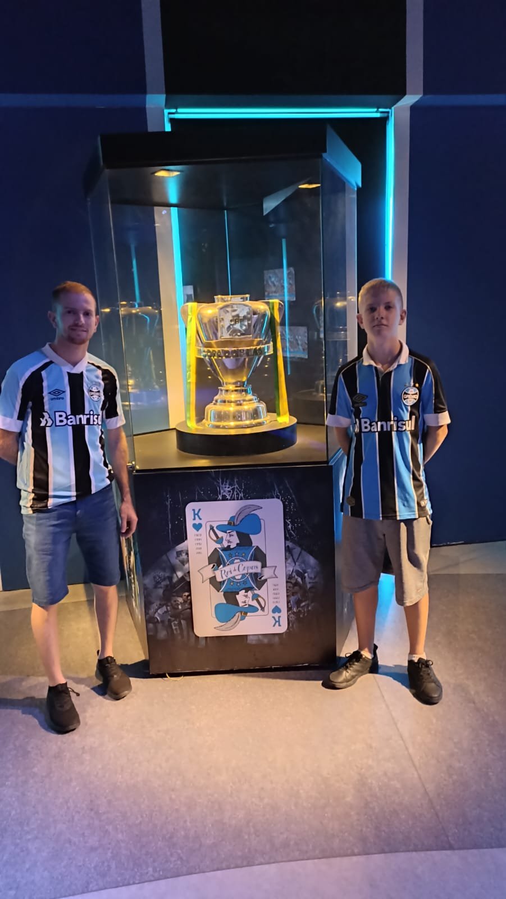

Conheça a nossa história
A Bratz Instalações Elétricas foi criada na cidade de Porto Xavier, com o objetivo de oferecer serviços elétricos de qualidade e confiança para seus clientes. Desde o início, a empresa buscou realizar seus trabalhos com responsabilidade, segurança e compromisso.
Com o passar dos anos, a qualidade dos serviços prestados permitiu que a empresa conquistasse novos clientes e ampliasse sua atuação. Atualmente, a Bratz Instalações Elétricas vem se expandindo cada vez mais pela região, levando soluções elétricas para diferentes cidades e fortalecendo sua presença no mercado.
Continuamos trabalhando para crescer e atender seus clientes da melhor forma possível, mantendo o foco na qualidade e na satisfação de quem utiliza seus serviços.
